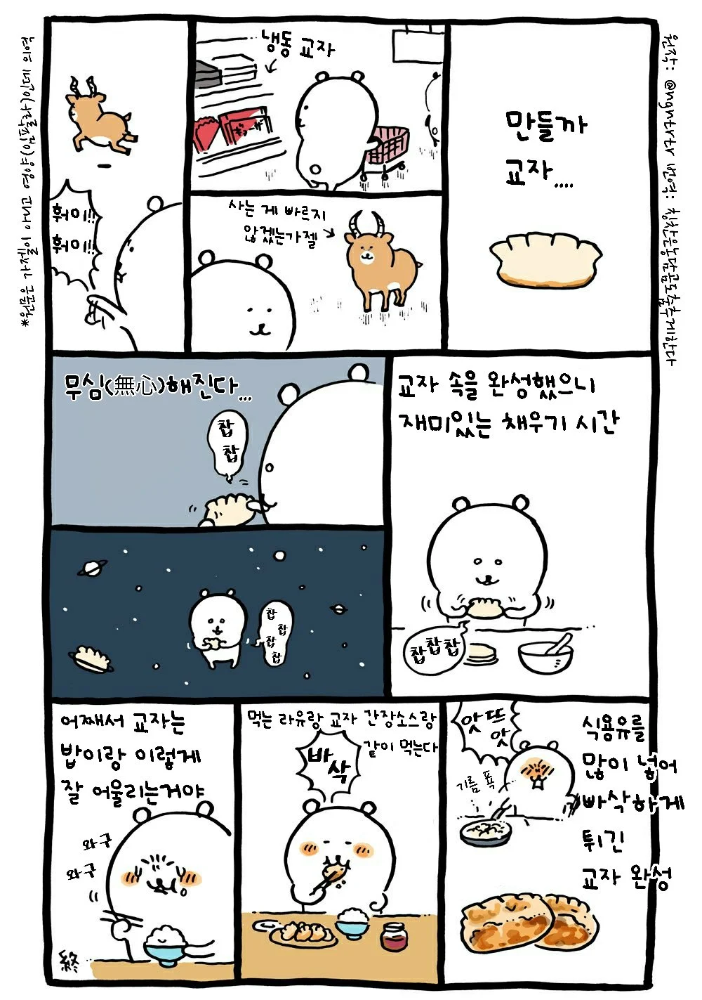
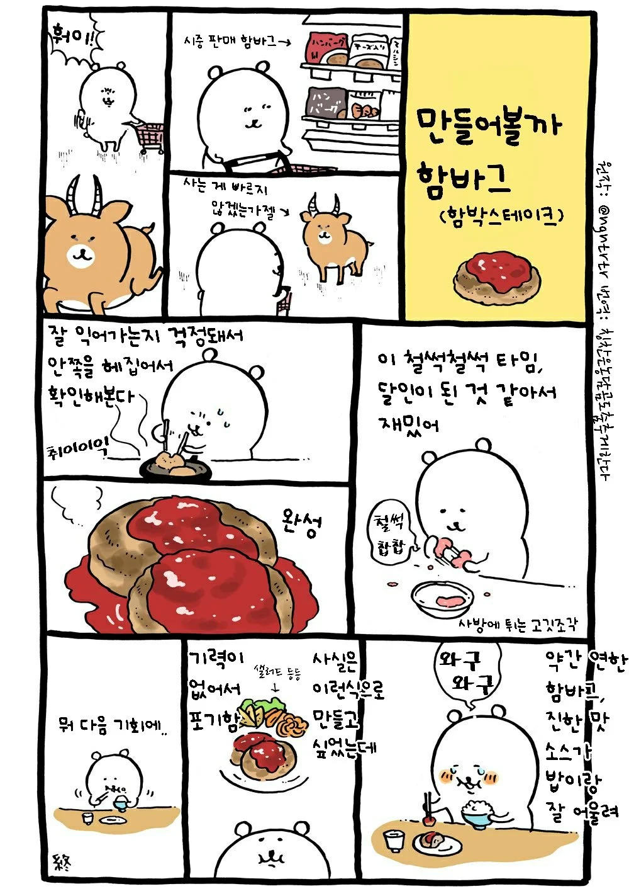
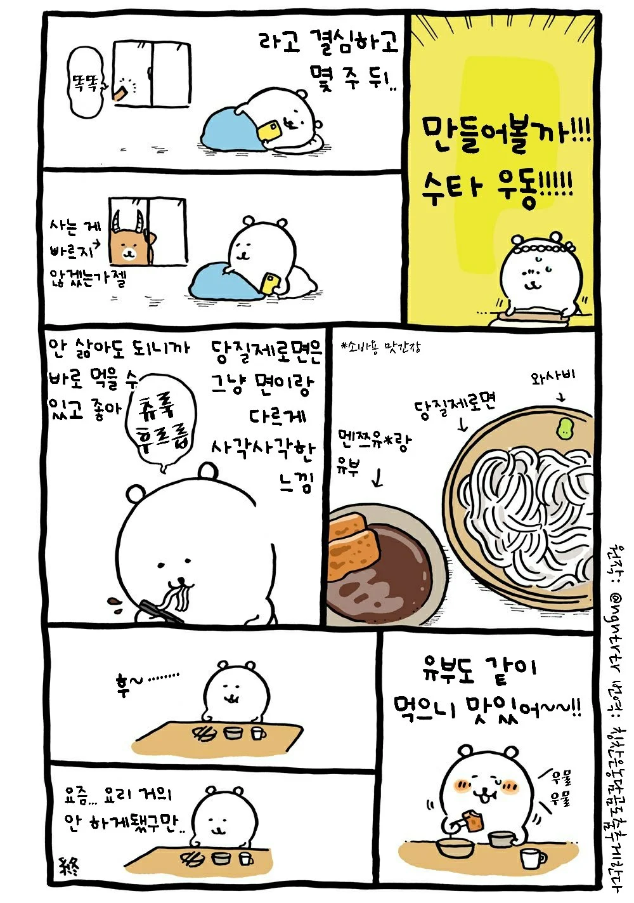
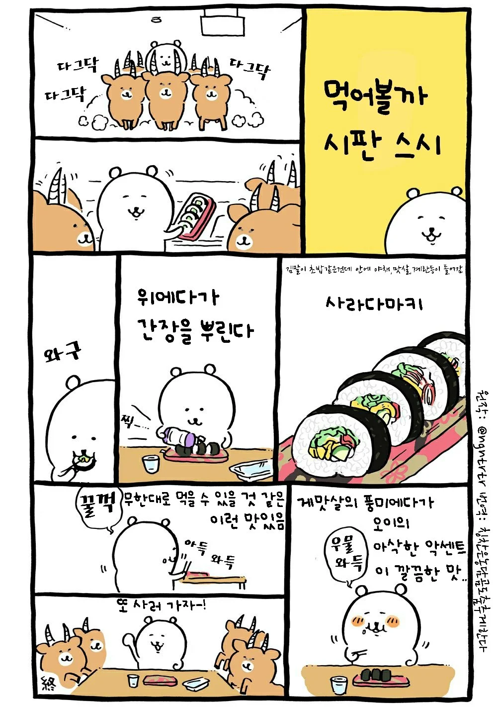

고용 요리사한테 시킬듯
사는게 빠르지 않겠는가젤
가젤에 굴복했구나
만두가 밥이랑 어울려...?
교자는 밥이랑 어울림
그냥 밥 말고 볶음밥이랑 매치해서 기름진 음식x기름진 음식으로 코팅 한다음 맥주나 콜라같은 탄산으로 싹 씻어내면 건강에 좋음
가젤 너무 강하다
가젤졸귀네 ㅋㅋ
귀엽다...ㅋㅋ
하지 않겠는가젤
이젠 이런 맛이좀 없지..
치이카와 말고 농담곰...
같은작가임
알지 나가노 작가인거, 글 제목 봐바
사라다마키는 야채김밥이잖아
이제 돈도 많고 사먹기만할듯...ㅋㅋㅋ